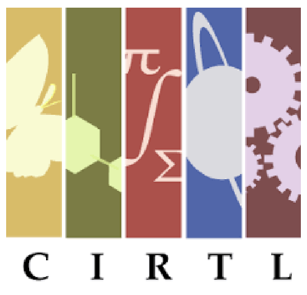

<div class="grid__container spacing__margin-bottom--4">
  <div class="grid__col--3of4 grid__container-padding is-left grid__mobile--full-width">
    <div class="speech-bubble speech-bubble--pink spacing__margin-bottom--2">
      <div class="text__font-size--24 text--bold">I am José Camou, a UX designer and front-end developer currently living in Clearwater, Florida.</div>
    </div>
    
    <figure class="grid__container--centered figures__width--100  spacing__margin-bottom--4">
      
    </figure>


    <p>I was previously leading design and UX in a small company EdTech shop called <a href="http://sixthedge.com/">Sixth Edge</a>. I received a B.S. in Computer Science and a M.S. in Human-Computer Interaction. </p>

    <p class="spacing__margin-bottom--2">Shoot me an email <a href="mailto:jccamou@gmail.com?Subject=Hello">here</a>. You can find my code <a href="https://github.com/jcamou">here</a>.</p>

<!--     <hr class="divider--thick divider--blue">
    <h1 class="spacing__margin-bottom--0">Recent Work</h1>
    <p class="spacing__margin-bottom--4">Here's a curated list of some of my work.</p>
    <ul class="basic-list--no-dots">
      <li class="basic-list__item spacing__margin-bottom--4">
        <a href="/work/opentbl" class="feature-list__link">
          <figure class="figures__work-logo">
            
          </figure>
          <h2 class="text__color--black">
              OpenTBL
          </h2>
          <p class="text__color--black">OpenTBL is a learning platform designed specifically for Team-based Learning (TBL).</p>
        </a>
      </li>

      <li class="basic-list__item spacing__margin-bottom--4">
        <a href="/work/cirtl" class="feature-list__link">
          <figure class="figures__work-logo">
            
          </figure>
          <h2 class="text__color--black">
              CIRTL Network
          </h2>
          <p class="text__color--black">A platform that provides a place to share resources, create learning communities, and offer courses to current and future STEM faculty committed to advancing evidence-based teaching practices.</p>
        </a>
      </li>

      <li class="basic-list__item spacing__margin-bottom--4">
        <a href="/work/urban-forecast" class="feature-list__link">
          <h2 class="text__color--black">
              Urban Forecast
          </h2>
          <p class="text__color--black">A crisis management mobile app designed to help people post a crisis event on a map to warn others.</p>
        </a>
      </li>

    </ul> -->
  </div>
</div>
